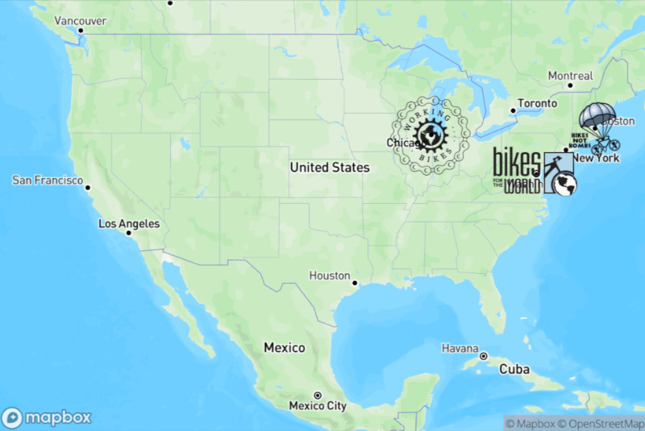

Give Your Bike a Second Life
Every bicycle you donate is refurbished and given to someone who needs it - students traveling to school, healthcare workers reaching remote villages, farmers getting goods to market. Your old bike becomes someone's lifeline.
50,000+
Bikes Shipped
15+
Collection Partners
2
Countries
25+
Years of Impact
United States Drop-off Locations
Partner with organizations across America to collect and ship bicycles

Seattle, WA
Village Bicycle Project HQ
1915 11th Ave E
Seattle, WA 98102
Seattle, WA 98102
Drop-off: Saturdays 10am - 2pm
Or by appointment
Contact for drop-off →
Or by appointment
Chicago, IL
Working Bikes
2434 S Western Ave
Chicago, IL 60608
Chicago, IL 60608
Tues-Sat: 12pm - 7pm
Sunday: 12pm - 5pm
Visit Working Bikes →
Sunday: 12pm - 5pm
Washington, DC Area
Bikes for the World
Various collection events
throughout the DC metro area
throughout the DC metro area
Check website for upcoming
collection events
Visit Bikes for the World →
collection events
Boston, MA
Bikes Not Bombs
284 Amory St
Jamaica Plain, MA 02130
Jamaica Plain, MA 02130
Mon-Fri: 10am - 6pm
Saturday: 10am - 5pm
Visit Bikes Not Bombs →
Saturday: 10am - 5pm
New York, NY
Recycle-A-Bicycle
75 Avenue C
New York, NY 10009
New York, NY 10009
Wed-Sun: 12pm - 7pm
Visit Recycle-A-Bicycle →
Can't Find a Location?
Ship Directly
Contact us about shipping your
bicycle directly to our warehouse
bicycle directly to our warehouse
We can provide shipping labels
for larger donations
Email us about shipping →
for larger donations
United Kingdom Drop-off Locations
Our UK partner helps collect and ship bicycles from across Britain

London Area
Re-Cycle
Unit 8 The IO Centre
Lea Road, Waltham Abbey
Essex EN9 1AS
Lea Road, Waltham Abbey
Essex EN9 1AS
Mon-Fri: 9am - 5pm
Saturday: By appointment
Visit Re-Cycle →
Saturday: By appointment
Collection Events
Various UK Locations
Re-Cycle organizes collection events
throughout the UK
throughout the UK
Check website for upcoming
events near you
Find an event →
events near you
Corporate Collections
Workplace Pickup Available
We can arrange collection from
workplaces with 10+ bikes
workplaces with 10+ bikes
Great for corporate CSR
initiatives
Arrange a collection →
initiatives
What We Accept
✓ We Accept
- Adult bicycles (all types)
- Children's bicycles (16" wheels and up)
- Bikes in repairable condition
- Bikes with flat tires (we can fix those!)
- Bikes with minor rust
- Spare parts and accessories
- Helmets in good condition
- Pumps, locks, and lights
✗ We Cannot Accept
- Bikes with cracked or bent frames
- Exercise bikes / stationary bikes
- Bikes with severe rust damage
- Tricycles
- Bikes with training wheels
- Electric bikes (e-bikes)
- Unicycles
- Bike trailers (limited space)
What Happens to Your Bike
1
Drop Off
Bring your bike to a collection point near you
2
Refurbish
Skilled mechanics repair and tune each bicycle
3
Ship
Bikes are packed into containers and shipped to Africa
4
Transform
Your bike reaches someone whose life it will change
Ready to Donate?
Your bicycle can provide transportation for education, healthcare, and economic opportunity. Every bike makes a difference.
Frequently Asked Questions
Is my bicycle donation tax-deductible?
Yes! Village Bicycle Project is a 501(c)(3) nonprofit organization in the US. We provide donation receipts for all bicycle donations. Please keep your receipt for your tax records. In the UK, donations to Re-Cycle may qualify for Gift Aid.
My bike doesn't work. Can I still donate it?
In most cases, yes! Our skilled mechanics can repair many issues including flat tires, broken brakes, and worn chains. The main things we cannot fix are cracked or severely bent frames. When in doubt, bring it in and we'll take a look.
Can I donate multiple bicycles?
Absolutely! We welcome donations of any size. If you have 10 or more bicycles (from a company, school, or community collection), contact us about arranging a pickup. We can also provide promotional materials if you'd like to organize a collection drive.
How long until my bike reaches someone in Africa?
The journey typically takes 3-6 months from donation to delivery. This includes time for sorting, repairs, container packing, ocean shipping, customs clearance, and distribution. We ship containers several times per year depending on inventory and funding.
Can I find out who receives my bicycle?
While we can't track individual bikes, we share stories and updates from our programs in Ghana and Sierra Leone. Sign up for our newsletter or follow us on social media to see the impact your donation makes. For larger donations, we may be able to arrange special updates.